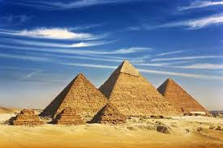

summary of the pyramids
Pyramids

What are pyramids?
How was it built?
What is the story of the pyramids?
Pyramids
The pyramids are tombs for ancient Egyptian pharaohs and their kings and
queens.
Pharaohs were mummified and buried inside pyramids with many treasures to
ensure that the pharaoh had a good life in the afterlife.
The pyramids wstyle are also built to keep thieves away from the gold and
offerings in which the pharaohs were buried.
The pyramids are built of stone and have many hidden rooms inside.
The Egyptian pyramids are one of the Seven Wonders of the World.
It was built by the ancient Egyptians between 2630 and 1530 BC.
They were also used as tombs for kings
The Pyramid of Khufu, located west of Giza, is the largest among them.
Pyramids
summary of the pyramids
ما هي الأهرامات
كيف تم بناء الأهرامات
ما هي قصة الأهرامات
Pyramids
الأهرامات مقابر للمصريين القدماء الفراعنة وملوكهم وملكاتهم.
تم تحنيط الفراعنة ودفنهم داخل الأهرامات مع العديد من الكنوز لضمان تمتع
الفرعون بحياة جيدة في الآخرة.
تم بناء الأهرامات أيضًا لإبعاد اللصوص عن الذهب والقرابين التي دفن بها
الفراعنة.
الأهرامات مبنية من الحجر وبداخلها العديد من الغرف المخفية.
تعد الأهرامات المصرية إحدى عجائب الدنيا السبع.
بناها المصريون القدماء بين 2630 و 1530 قبل الميلاد. وقد استخدمت أيضا كمقابر
للملوك والملكات.
ويعد هرم خوفو الواقع غرب الجيزة لأكبر بينها.
Pyramids